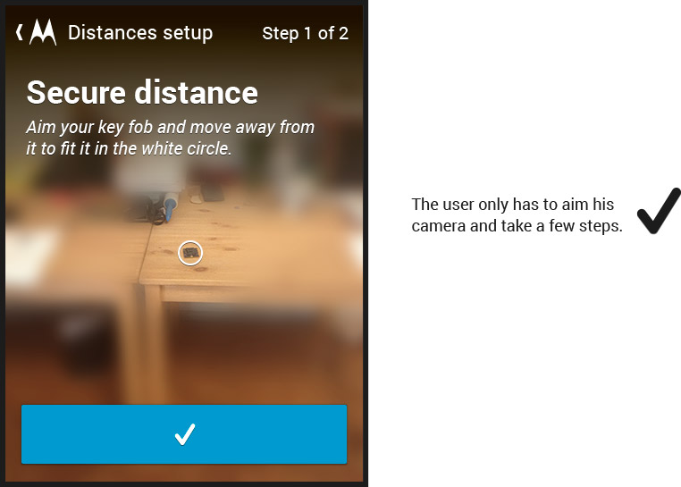
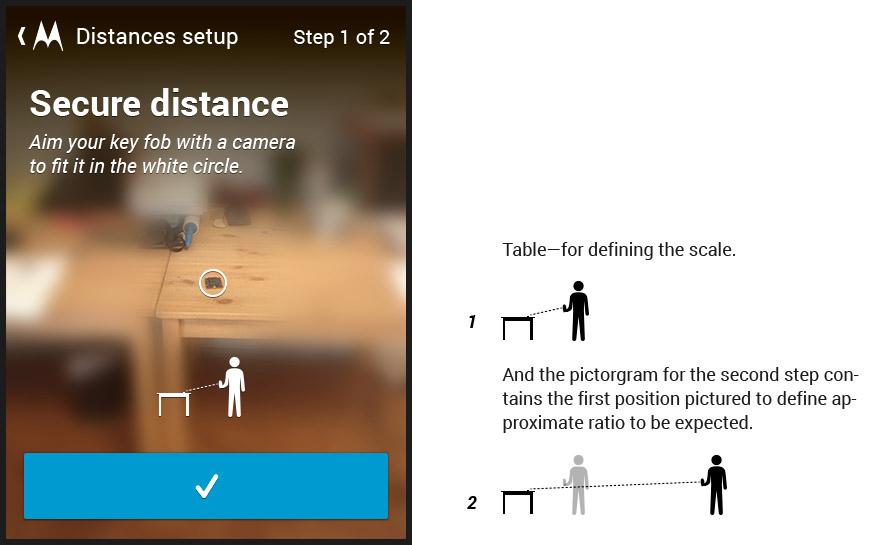

Motorola has wireless sercurity key fobs (or tokens) which can be bound to your smartphone, so that you can use your device only if the the token is present. Like those in car security systems.
The problem is that firstly it should be calibrated and set up for specific distance key-points. You also can choose what action to take if your device and the token split further from each other.
The one thing to accept is that the first distance setting process, unfortu- nately, has to be done inevitably. There are technical constraints to measure certain distances to just skip any settings. So lets make it a pleasure for user to get through this.
The app greets the user with an invitation to make the first step straight away. We can skip long introductions and explanations here, cause the app was installed on one purpose, so we don’t need to lure user or something.
The approach was to use the most natural visual explanations posible to avoid some complex schemes and long paragraphs. I came to idea of using a camera view to make the process almost gamificated.
Underlining "this size" and attaching the arrow can cause problems with localization, we can put it away and simply rephrase the hint in that case.
Well, this kind of interface should be definitely user-tested. It seems really easy to use, though, some small pictograms may well improve it.

And it’s done.
Under the hood this distances are just the signal stregths which are lowering the further you move away. That is why this kind of a buffer between two keypoints is needed—signals are unstable and depend on the environment.
Some actions are bound to entering the secure distance (for example, unlocking the phone) and some to leaving the insecure (for example, locking the phone or sending a notification).
So we don’t need the fine measures. We just need the correlation of signal strengths.